Doce pasajes de la Epopeya de Gilgamesh
Escrita en tablillas de arcilla hace más de cuatro mil años, la epopeya cuenta cómo un rey invencible descubre la muerte a través de la pérdida de un amigo. Lo que sigue son los doce episodios que sostienen la obra, con sus pasajes literales. Cada uno corresponde a una sala del recorrido tridimensional.
Estación I · Patio de Uruk
El Rey Tirano de Uruk
Gilgamesh, dos terceras partes dios y una hombre, reina en Uruk con una fuerza perfecta pero con una arrogancia desmedida. Los nobles se quejan ante los dioses porque el rey no deja a los hijos con sus padres ni a las doncellas con sus madres, abusando de su poder día y noche.
"Gilgamesh separa a los hijos de sus padres, día y noche suelta el freno a su arrogancia. Ése es Gilgamesh, el pastor de Uruk... No deja a la doncella al lado de su madre".
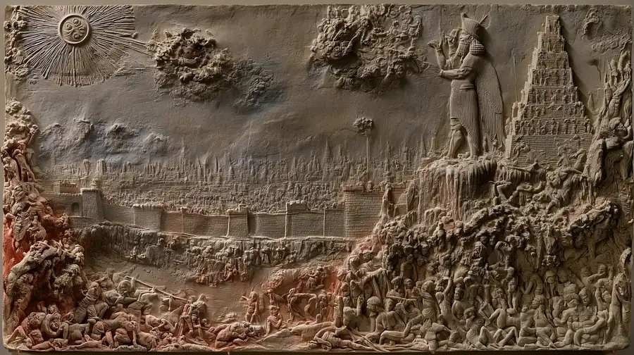
Estación II · Cámara de Enkidu
La Creación de Enkidu
Atendiendo a las quejas, la diosa Aruru crea con arcilla a Enkidu, un ser salvaje destinado a ser el contrincante de Gilgamesh. Enkidu vive en la llanura, su cuerpo está cubierto de vello y convive pacíficamente con las bestias, protegiéndolas de los cazadores.
"La diosa Aruru se mojó las manos, y tomó arcilla y empezó a modelarla y a dar forma a Enkidu... Con las gacelas, en el llano, se alimenta de hierba".
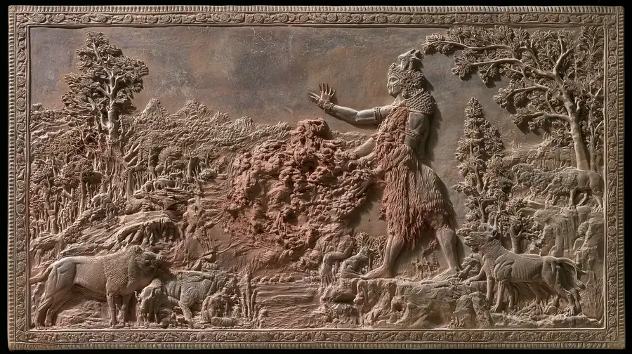
Estación III · Cámara de Enkidu
La Humanización de Enkidu
Para civilizar a Enkidu, Gilgamesh envía a una hieródula (prostituta sagrada). Tras conocer el amor humano durante seis días y siete noches, Enkidu descubre que los animales huyen de él; aunque su fuerza física disminuye, su espíritu se vuelve "sabio" y comprende el mundo.
"Seis días y siete noches Enkidu conoció a la mujer... Enkidu no podía correr como antes, mas su espíritu ahora era sabio, comprendía".
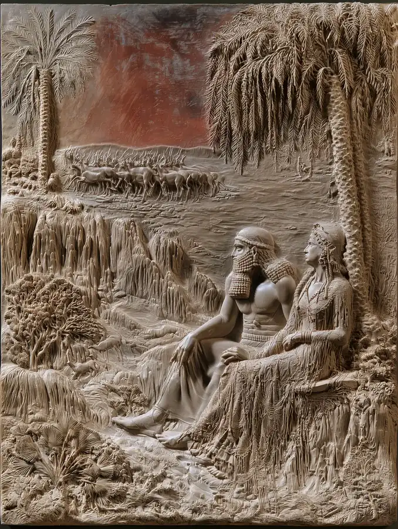
Estación IV · Patio de la Reunión
El Encuentro y la Amistad Heroica
Enkidu llega a Uruk para desafiar la tiranía del rey. Ambos luchan ferozmente frente a la Morada de la Reunión como "dos fieros toros", pero tras reconocer su parigualdad, la lucha cesa y sellan una amistad inquebrantable que los unirá para siempre.
"Se asieron entrambos, como dos fieros toros se lanzaron uno contra otro... se besaron y sellaron su amistad".
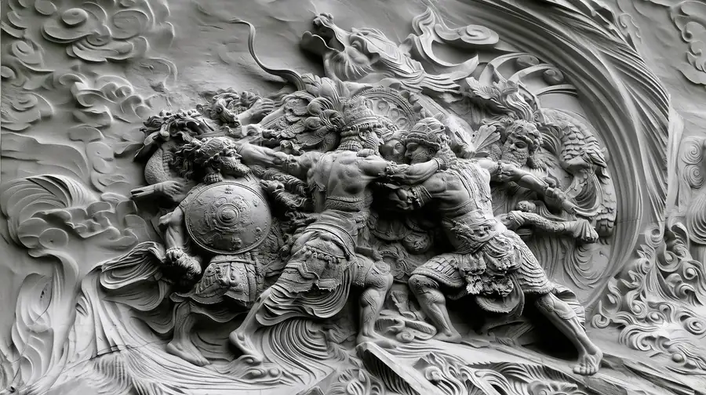
Estación V · Bosque de los Cedros
La Expedición al Bosque de los Cedros
Buscando la gloria eterna y "conquistar un nombre", Gilgamesh decide viajar al Bosque de los Cedros para derrotar a Humbaba, el guardián monstruoso puesto por los dioses. A pesar del miedo de Enkidu, Gilgamesh insiste en que solo los dioses son inmortales y que el hombre debe luchar por su fama.
"¡El mundo sabrá cuán fuerte es el hijo de Uruk! Extenderé mi mano y caerán los cedros, conquistaré una duradera fama".
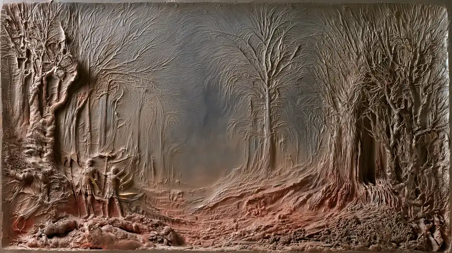
Estación VI · Guarida de Humbaba
La Derrota de Humbaba
Con la ayuda de los ocho vientos enviados por el dios Shamash, los héroes logran inmovilizar a Humbaba. Aunque el gigante suplica clemencia, los amigos lo ejecutan y cortan su cabeza, eliminando así al guardián del bosque sagrado.
"El dios-sol... escuchó el ruego de Gilgamesh, y he aquí que formidables huracanes se levantaron contra Humbaba... Y cortaron la cabeza de Humbaba".
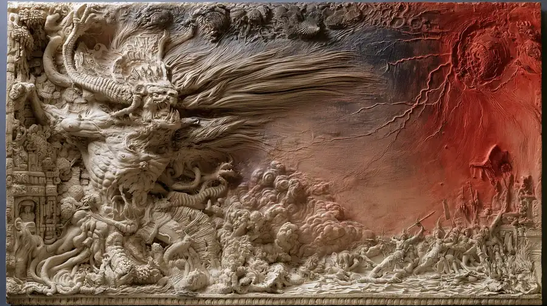
Estación VII · Plaza del Toro
El Rechazo a Ishtar y el Toro Celeste
La diosa Ishtar se enamora de Gilgamesh, pero él la rechaza insultándola y recordándole el mal destino de sus anteriores amantes. Enfurecida, Ishtar envía al Toro Celeste para destruir Uruk, pero los dos amigos logran matarlo, humillando así a la divinidad.
"Muerto el Toro Celeste, le arrancaron el corazón y lo ofrendaron al dios Shamash... Enkidu arrancó las partes del Toro Celeste y se las arrojó a la cara [a Ishtar]".
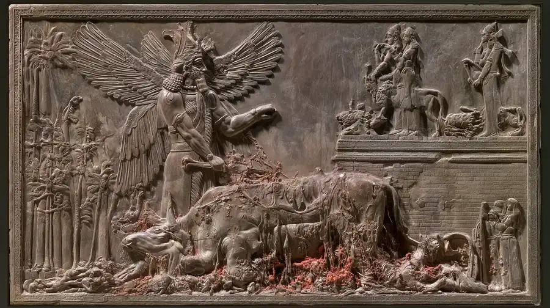
Estación VIII · Cámara de Enkidu, vacía
La Muerte de Enkidu
Los dioses deciden que Enkidu debe morir como castigo por sus hazañas. Enkidu enferma y tiene visiones aterradoras del mundo de las sombras. Tras su muerte, Gilgamesh queda sumido en una aflicción total, llorando a su amigo como una plañidera y negándose a aceptar su partida.
"Gilgamesh le pone la mano sobre el pecho: el corazón ya no late; abraza a su amigo como a una novia, ruge de dolor como un león".
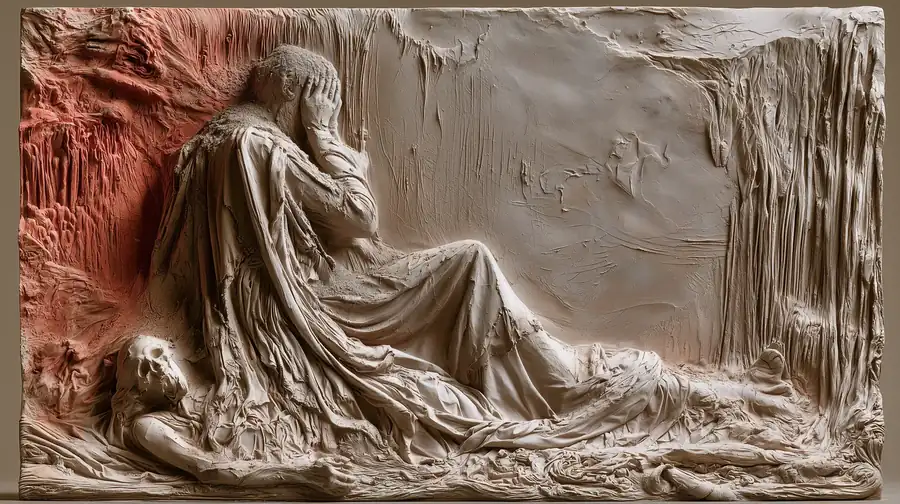
Estación IX · Montañas de Mashu
El Viaje por las Montañas de Mashu
Aterrorizado por su propia muerte, Gilgamesh parte en busca de Ut-Napishtim para obtener la vida eterna. En su camino debe cruzar las montañas de Mashu, donde se encuentra con los aterradores hombres escorpión, guardianes de las puertas del Sol.
"son los hombres escorpiones, guardianes de las puertas del Sol; suscitan gran terror y quien los contempla muere".
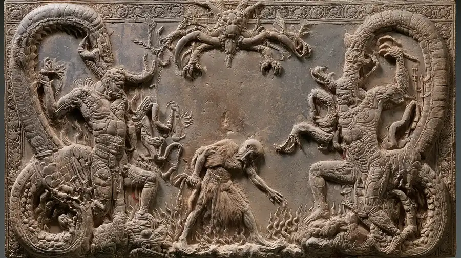
Estación X · Isla de Ut-Napishtim
Encuentro con Ut-Napishtim y el Diluvio
Gilgamesh cruza las "Aguas de la Muerte" y encuentra a Ut-Napishtim. Este le revela que la inmortalidad fue un regalo único tras sobrevivir al Gran Diluvio, y le explica que los dioses deciden sobre la vida y la muerte sin revelar el día final.
"Los dioses deciden sobre nuestra muerte y nuestra vida, pero no revelan el día de nuestra muerte".
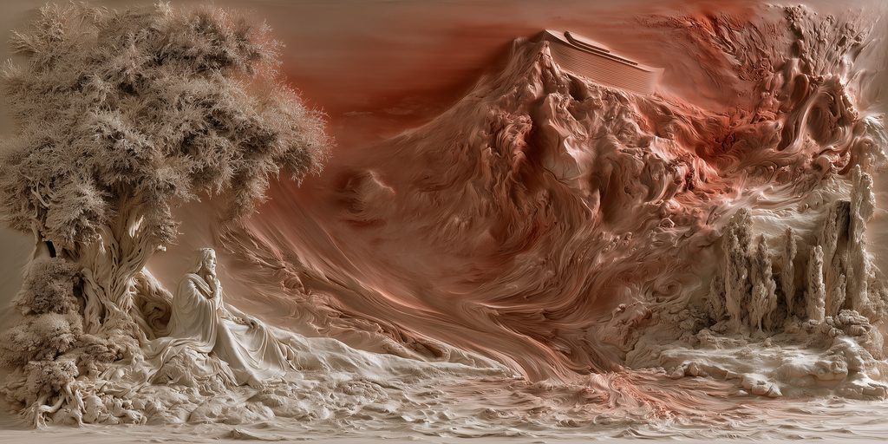
Estación XI · Ascenso a las murallas
La Planta de la Juventud y el Fracaso Final
Ut-Napishtim le revela la ubicación de una planta que devuelve la juventud. Gilgamesh la recupera del fondo del mar, pero mientras se baña, una serpiente se la roba. El héroe comprende finalmente que su único legado duradero serán las murallas de Uruk que él mismo construyó.
"Mientras tanto, una serpiente percibió el olor de la planta, salió de su agujero y se la llevó... Gilgamesh sentose y lloró".
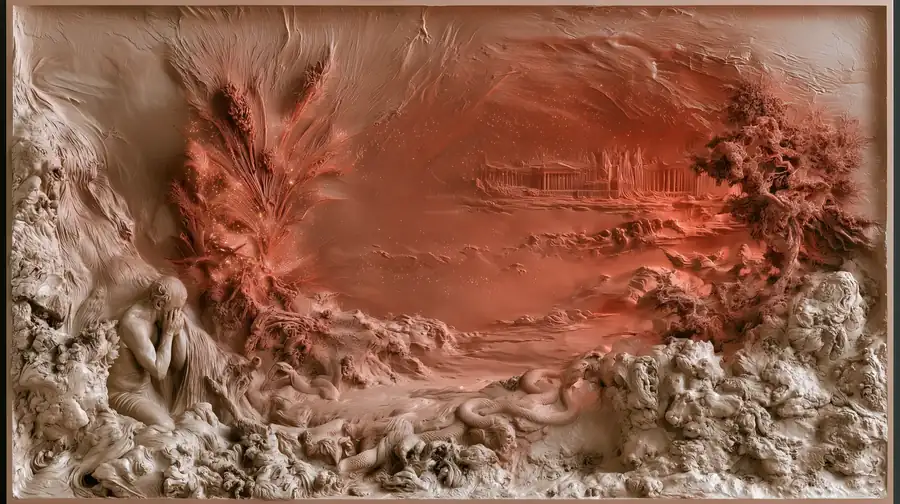
Estación XII · Cima de las murallas
El Diálogo con el Espíritu de Enkidu
En la parte final, el espíritu de Enkidu regresa brevemente del mundo de las sombras para hablar con Gilgamesh. La revelación es desoladora: el más allá es un lugar de polvo y olvido donde todo lo amado termina roído por los gusanos, cerrando la obra con una reflexión pesimista sobre el destino humano.
"—Dime, amigo mío... la ley del mundo subterráneo... —Lo que has amado, lo que has acariciado... está hoy cubierto de polvo".
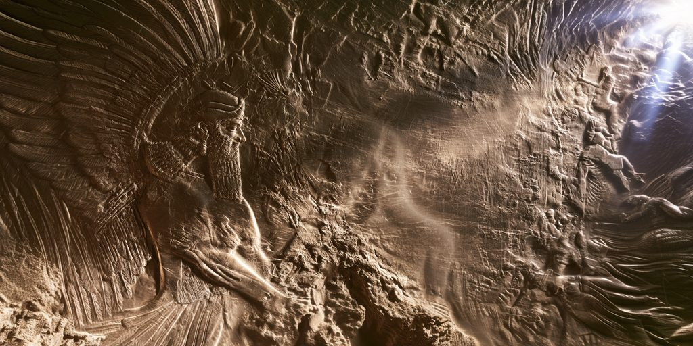